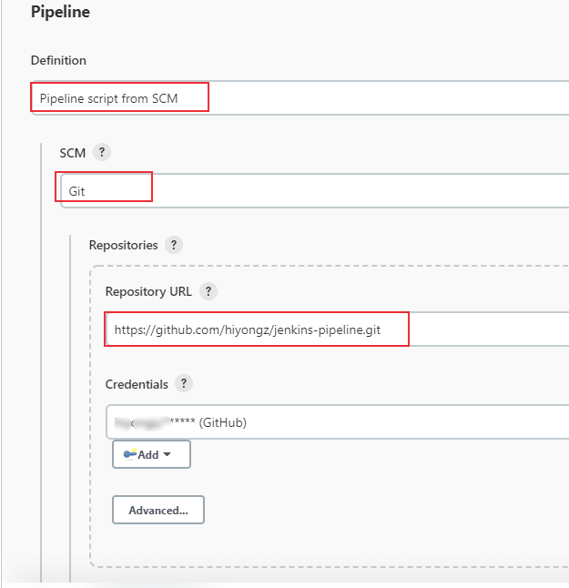
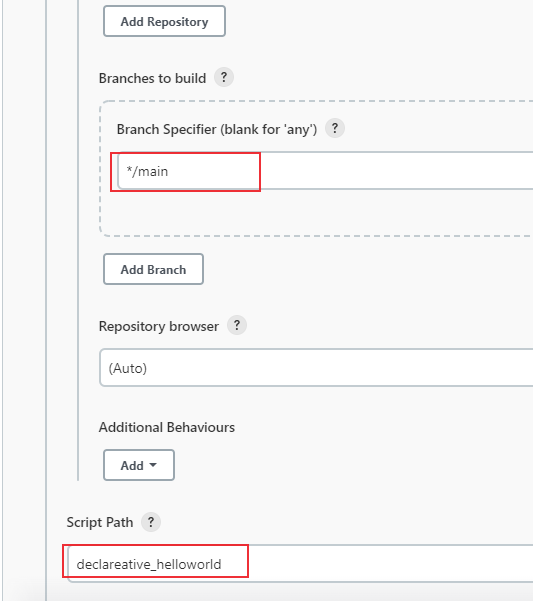
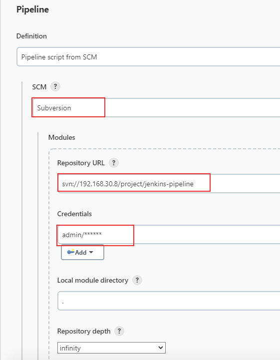
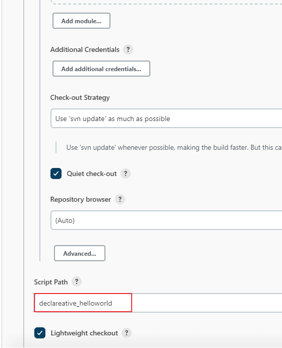

在pipeline项目中，可以直接在jenkins的web UI上编写pipeline脚本，还有一种方法是使用Jenkinsfile，它放在源码管理库中，比如github、SVN等。为了使pipeline项目管理更加方便，推荐使用这种方式。本文将介绍pipeline项目如何使用Jenkinsfile。
1. 编写jenkinsfile
在持续集成：Jenkins Pipeline语法介绍 中介绍了pipeline支持的两种语法：Declarative 和 Scripted Pipeline。编写pipeline脚本保存为jenkinsfile文本文件，示例脚本如下：
1
2
3
4
5
6
7
8
9
10
11
12
13
14
15
16
17
18
19
20
21
22
23
24
25
26
27
28
29
30
31
32
33
34
35
36
37
38
39
40
41
42
43
44
45
46
47
48
49
| pipeline {
agent any
stages {
stage('begin'){
steps {
echo 'begin'
sleep 2
}
}
stage('running'){
steps {
echo 'running'
script {
RUNNING_STATU = sh (
script: "echo 'running'",
returnStatus: true
) == 0
if ("${RUNNING_STATU}" == "false") {
catchError(stageResult: 'FAILURE') {
echo "执行失败"
}
sh "EXIT 1"
}
}
sleep 2
}
}
stage('finish'){
steps {
echo 'finish'
sleep 2
}
}
}
post {
success {
echo 'success!'
sleep 2
}
failure {
echo 'failed...'
sleep 2
}
always {
echo 'goodbye'
}
}
}
|
保存脚本为文本文件：declareative_helloworld，上传到github或者SVN服务器中。
2. pipeline项目配置
创建一个pipeline项目（可选择Pipeline或者多分支流水线），pipeline脚本定义选择Pipeline script from SCM，
Git库配置方法：


SVN库配置方法：


3. 构建
配置完成后保存，构建时会检出jenkinsfile后执行jenkinsfile中的流水线步骤。比如SVN库的构建日志如下：
1
2
3
4
5
6
7
8
9
10
11
12
13
14
15
16
17
18
19
20
21
22
23
24
25
26
27
28
29
30
31
32
33
34
35
36
37
38
39
40
41
42
43
44
45
46
47
48
49
50
51
52
53
54
55
56
57
58
59
60
61
62
63
64
65
| Started by user admin
Obtained declareative_helloworld from svn svn://192.168.30.8/project/jenkins-pipeline
[Pipeline] Start of Pipeline
[Pipeline] node
Running on master in /tmp/jenkins_slave/workspace/jenkinsfile_demo2
[Pipeline] {
[Pipeline] stage
[Pipeline] { (Declarative: Checkout SCM)
[Pipeline] checkout
Checking out a fresh workspace because /tmp/jenkins_slave/workspace/jenkinsfile_demo2 doesn't exist
Cleaning local Directory .
Checking out svn://192.168.30.8/project/jenkins-pipeline at revision '2022-04-19T20:22:48.150 +0800' --quiet
At revision 35
[Pipeline] }
[Pipeline] // stage
[Pipeline] withEnv
[Pipeline] {
[Pipeline] stage
[Pipeline] { (begin)
[Pipeline] echo
begin
[Pipeline] sleep
Sleeping for 2 sec
[Pipeline] }
[Pipeline] // stage
[Pipeline] stage
[Pipeline] { (running)
[Pipeline] echo
running
[Pipeline] script
[Pipeline] {
[Pipeline] sh
+ echo running
running
[Pipeline] }
[Pipeline] // script
[Pipeline] sleep
Sleeping for 2 sec
[Pipeline] }
[Pipeline] // stage
[Pipeline] stage
[Pipeline] { (finish)
[Pipeline] echo
finish
[Pipeline] sleep
Sleeping for 2 sec
[Pipeline] }
[Pipeline] // stage
[Pipeline] stage
[Pipeline] { (Declarative: Post Actions)
[Pipeline] echo
goodbye
[Pipeline] echo
success!
[Pipeline] sleep
Sleeping for 2 sec
[Pipeline] }
[Pipeline] // stage
[Pipeline] }
[Pipeline] // withEnv
[Pipeline] }
[Pipeline] // node
[Pipeline] End of Pipeline
Finished: SUCCESS
|
“我与我周旋久，宁作我！” ——《世说新语·品藻》